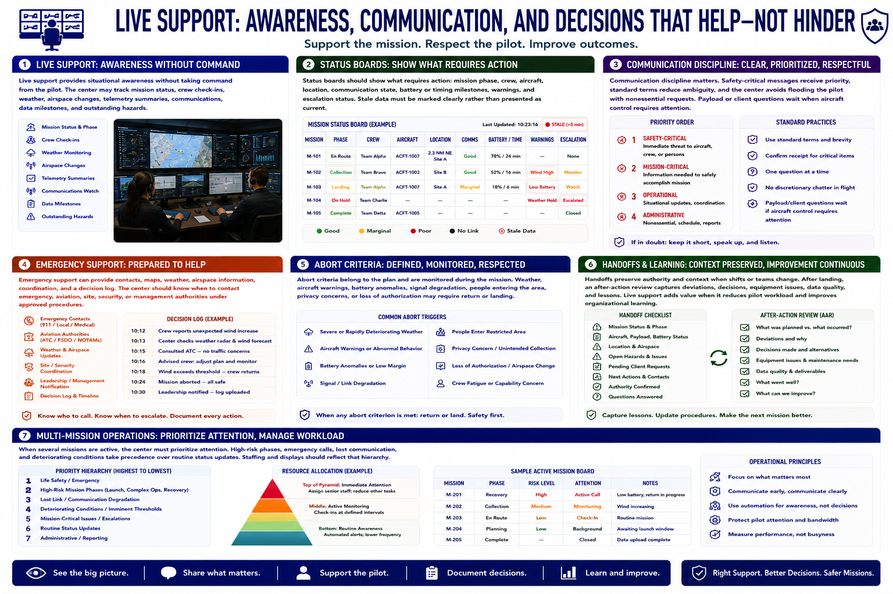

Live Operations and Mission Support
Connecting to LMS... Progress: in progress

Narration
Live support provides situational awareness without taking command from the pilot. The center may track mission status, crew check-ins, weather, airspace changes, telemetry summaries, communications, data milestones, and outstanding hazards.
Status boards should show what requires action: mission phase, crew, aircraft, location, communication state, battery or timing milestones, warnings, and escalation status. Stale data must be marked clearly rather than presented as current.
Communication discipline matters. Safety-critical messages receive priority, standard terms reduce ambiguity, and the center avoids flooding the pilot with nonessential requests. Payload or client questions wait when aircraft control requires attention.
Emergency support can provide contacts, maps, weather, airspace information, coordination, and a decision log. The center should know when to contact emergency, aviation, site, security, or management authorities under approved procedures.
Abort criteria belong to the plan and are monitored during the mission. Weather, aircraft warnings, battery anomalies, signal degradation, people entering the area, privacy concerns, or loss of authorization may require return or landing.
Handoffs preserve authority and context when shifts or teams change. After landing, an after-action review captures deviations, decisions, equipment issues, data quality, and lessons. Live support adds value when it reduces pilot workload and improves organizational learning.
When several missions are active, the center must prioritize attention. High-risk phases, emergency calls, lost communication, and deteriorating conditions take precedence over routine status updates. Staffing and displays should reflect that hierarchy.